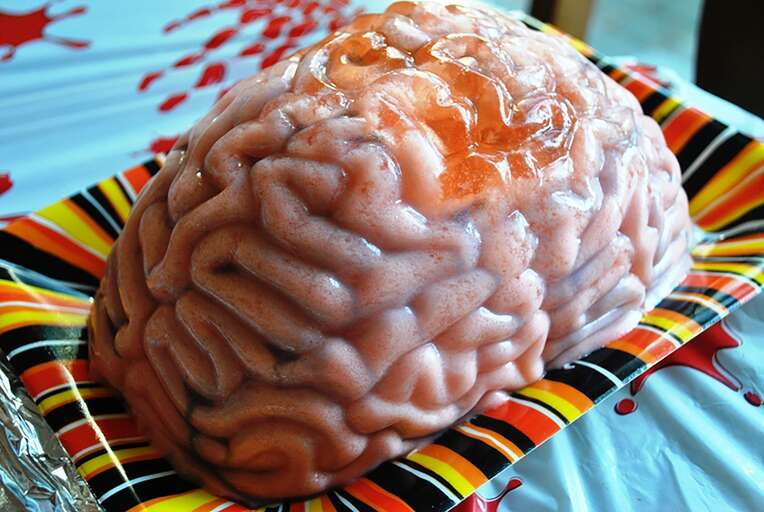

Home
Pink Brain Shooter

Description
This spooky jello brain Halloween treat is scarily realistic! A non-alcoholic version may also be made for the kiddies by substituting the peach schnapps with water.
Ingredients
- cooking spray
- 1 brain-shaped gelatin mold
- 4 (3 ounce) packages peach flavored Jell-O® mix
- 3 cups boiling water
- 1 (12 fluid ounce) can evaporated milk
- 1 ½ cups peach schnapps
- 4 drops blue food coloring
- 2 drops red food coloring
- 2 teaspoons water
Directions
Step 1
- Lightly grease a brain-shaped gelatin mold.
Step 2
- Stir peach gelatin mix with 3 cups boiling water in a bowl until gelatin is dissolved. Allow to cool to room temperature, about 20 minutes. Mix in evaporated milk and peach schnapps; pour into the prepared mold. Refrigerate until set, 4 to 6 hours.
Step 3
- Dip the mold in warm water to loosen; don't let water enter the top of the mold. Invert the mold onto a serving platter and lift to release the brain.
Step 4
- Mix blue and red food coloring in a small bowl with 2 teaspoons water. Use a small, clean paintbrush to paint coloring into the grooves of the brain. Place the brain into the refrigerator until color sets. Serve cold.